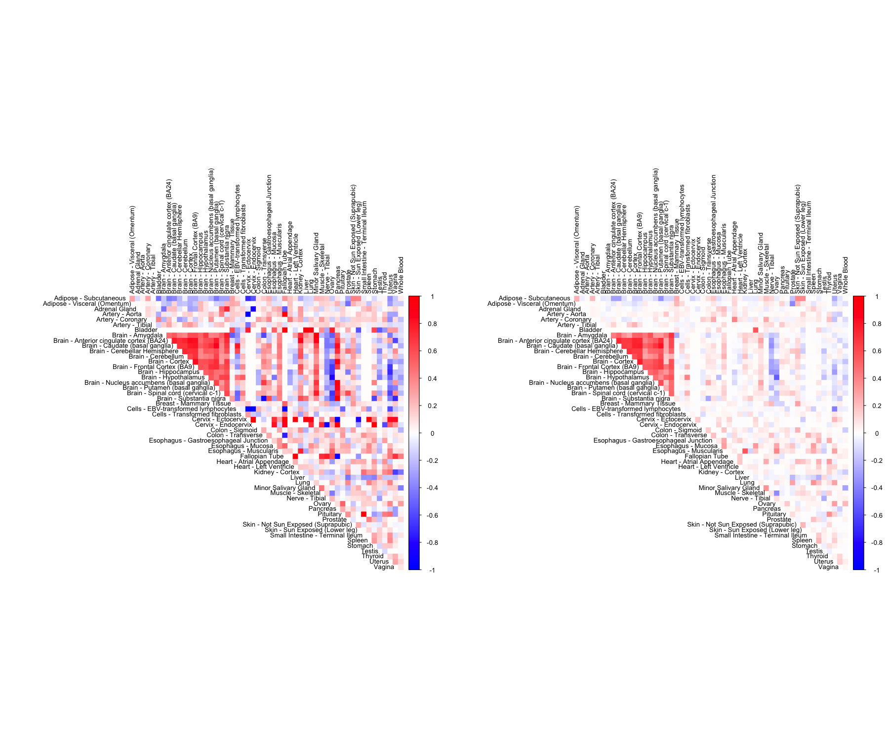
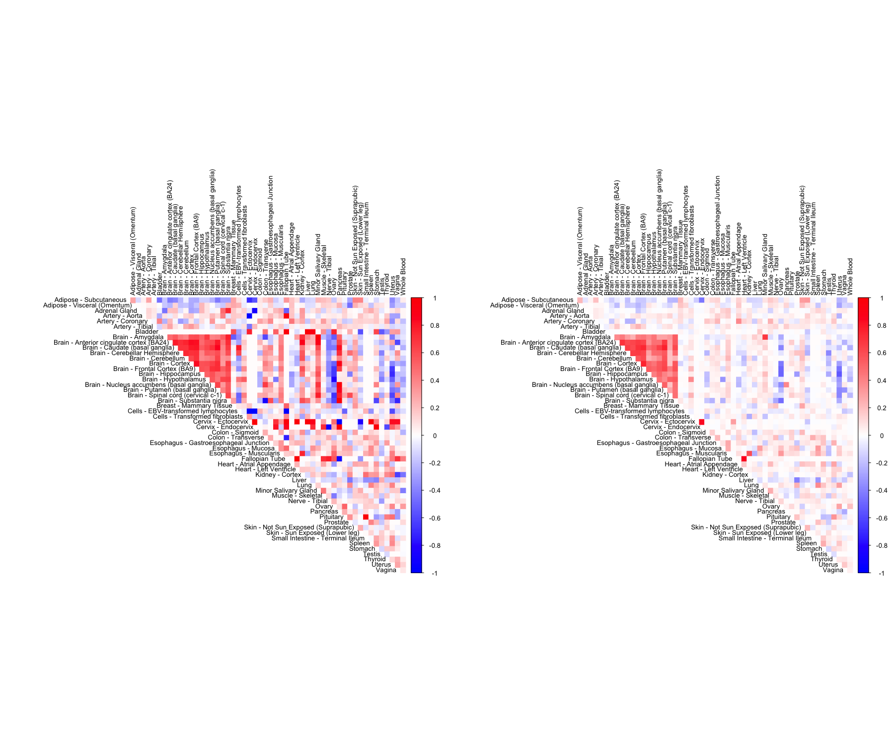
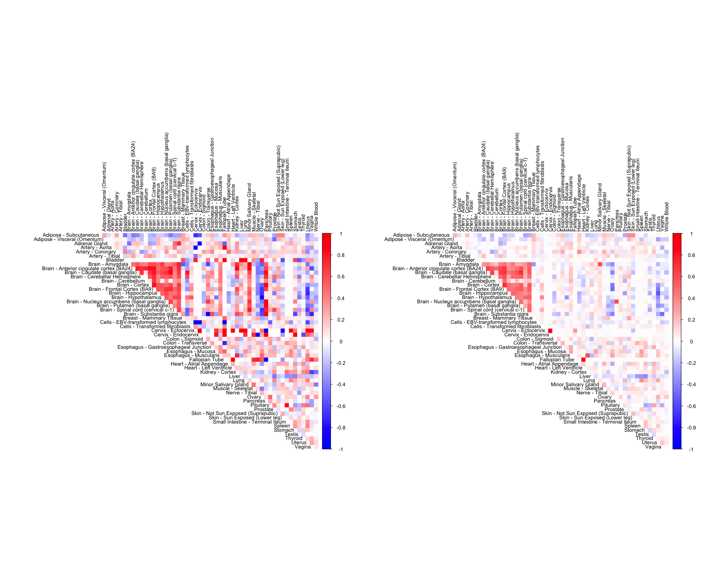
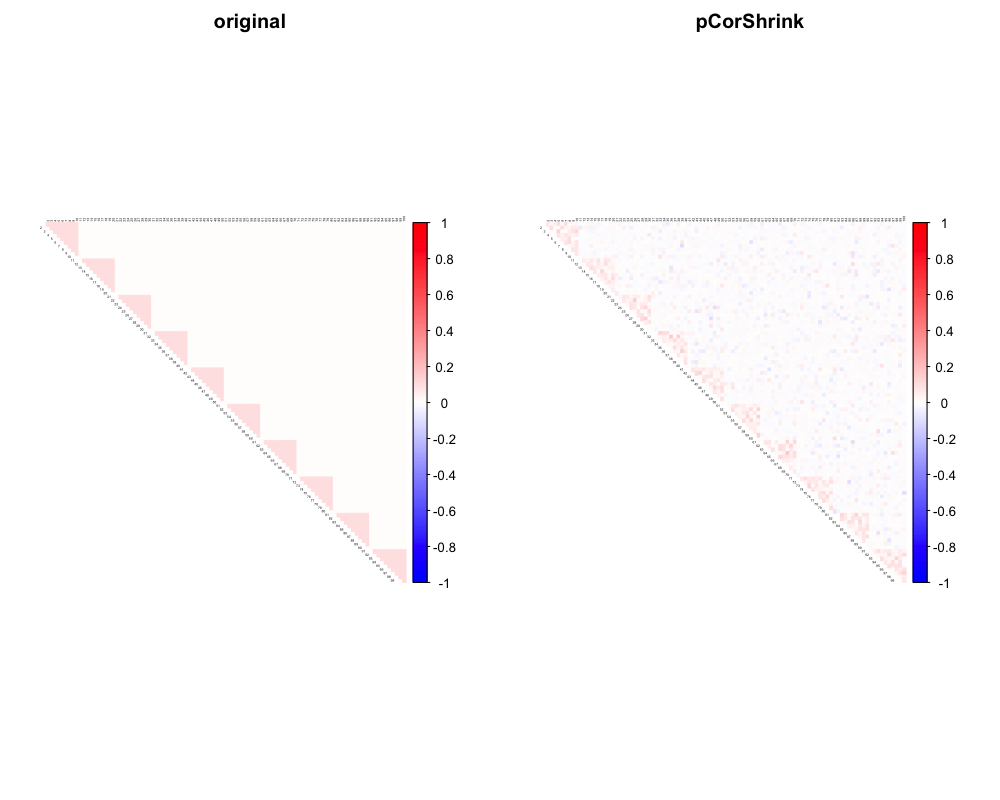
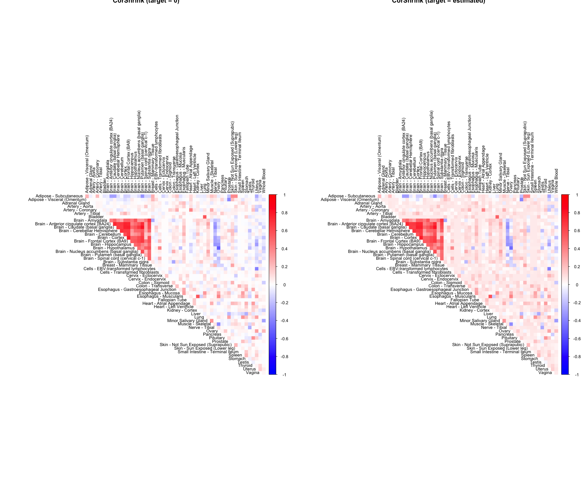
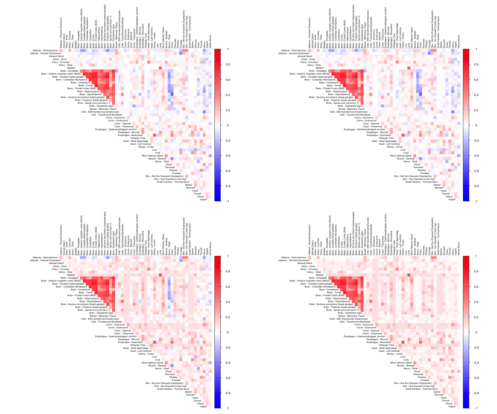

Estimation of correlation matrix by shrinkage based approaches is an ubiquitous problem in statistics. Popular shrinkage based methods are not flexible in handling missing observations.
Here, we propose an Empirical Bayes shrinkage approach called CorShrink, which adaptively learns how much to shrink the correlations by combining information across all pairs of variables, while also adjusting for the the varying amounts of missing data for each pair.
CorShrink is a very competing method to other correlation shrinkage approaches - PDSCE, corpcor, GLASSO etc under structured or sparse population covariance models when the number of samples \(N\) is less than the number of features \(P\).
CorShrink is flexible to apply on correlation-like quantities such as cosine similarities between words from word2vec models, thereby generating more robust similairty scores.
CorShrink can also be extended to generate adaptively shrunk partial correlations and can be used for conditional graph estimation as an alternative to GLASSO, CLIME etc.
CorShrink is a companion package to ashr R package [@stephens2016false]. Before installing CorShrink, please make sure you have the latest version of ashr.
install.packages("ashr")The other dependencies of this package include SQUAREM, reshape2 and Matrix. Next we install CorShrink.
install.packages("CorShrink")The development version can be installed from Github as well.
library(devtools)
install_github("kkdey/CorShrink")Then load the package with:
library(CorShrink)We load an example data matrix - the person (544) by tissue samples (53) gene expression data for the gene ENSG00000166819 collected from the Genotype Tissue Expression (GTEx) Project .
data("sample_by_feature_data")Just by checking the first few rows and columns, we see that the data contains many missing values. The data is
sample_by_feature_data[1:5,1:5]## Adipose - Subcutaneous Adipose - Visceral (Omentum)
## GTEX-111CU 10.472332 10.84006
## GTEX-111FC 7.335392 NA
## GTEX-111VG 9.118889 NA
## GTEX-111YS 10.806459 11.26113
## GTEX-1122O 11.040446 11.71497
## Adrenal Gland Artery - Aorta Artery - Coronary
## GTEX-111CU 2.721234 NA NA
## GTEX-111FC NA NA NA
## GTEX-111VG NA NA NA
## GTEX-111YS 3.454823 1.162059 NA
## GTEX-1122O 1.522667 1.674467 4.188002We estimate the adaptively shrunk correlation matrix for this data using CorShrink.
out <- CorShrinkData(sample_by_feature_data, sd_boot = FALSE, image = "both",
image.control = list(tl.cex = 0.8))
The function outputs a list with two elements which are two versions of CorShrink estimated matrices - cor and cor_before_PD.cor is the nearest positive definite approximation (\(R^{{\star}{\star}}\)) to cor_before_PD version (\(R^{{\star}}\)) as described in the methods above. When image = "both", the function plots the images for both these versions.
To see whether the method works well, check if the these two versions are close to each other.
out$cor_before_PD[1:5,1:5]## Adipose - Subcutaneous
## Adipose - Subcutaneous 1.00000000
## Adipose - Visceral (Omentum) 0.24093320
## Adrenal Gland -0.04403115
## Artery - Aorta 0.01330864
## Artery - Coronary 0.21663196
## Adipose - Visceral (Omentum) Adrenal Gland
## Adipose - Subcutaneous 0.240933205 -0.044031146
## Adipose - Visceral (Omentum) 1.000000000 0.002121612
## Adrenal Gland 0.002121612 1.000000000
## Artery - Aorta 0.004465918 -0.001097126
## Artery - Coronary 0.012401533 0.038526770
## Artery - Aorta Artery - Coronary
## Adipose - Subcutaneous 0.013308642 0.21663196
## Adipose - Visceral (Omentum) 0.004465918 0.01240153
## Adrenal Gland -0.001097126 0.03852677
## Artery - Aorta 1.000000000 0.03898770
## Artery - Coronary 0.038987702 1.00000000out$cor[1:5, 1:5]## Adipose - Subcutaneous
## Adipose - Subcutaneous 1.00000000
## Adipose - Visceral (Omentum) 0.24033223
## Adrenal Gland -0.04214076
## Artery - Aorta 0.01365631
## Artery - Coronary 0.21484578
## Adipose - Visceral (Omentum) Adrenal Gland
## Adipose - Subcutaneous 0.239003917 -0.0418844246
## Adipose - Visceral (Omentum) 1.000000000 0.0017177172
## Adrenal Gland 0.001718678 1.0000000000
## Artery - Aorta 0.003293150 -0.0008103749
## Artery - Coronary 0.013509246 0.0377365197
## Artery - Aorta Artery - Coronary
## Adipose - Subcutaneous 0.0135859012 0.21371816
## Adipose - Visceral (Omentum) 0.0032943783 0.01351303
## Adrenal Gland -0.0008111305 0.03776819
## Artery - Aorta 1.0000000000 0.03858038
## Artery - Coronary 0.0385839706 1.00000000CorShrink takes as input not just the samples by features data matrix but also a matrix of pairwise correlations with a matrix of number of samples for each pair contributing to the correlation.
data("pairwise_corr_matrix")
data("common_samples")
out <- CorShrinkMatrix(pairwise_corr_matrix, common_samples, image = "both",
image.control = list(tl.cex = 0.8))CorShrink can be applied to vectors of correlations as well.
cor_vec <- c(-0.56, -0.4, 0.02, 0.2, 0.9, 0.8, 0.3, 0.1, 0.4)
nsamp_vec <- c(10, 20, 30, 4, 50, 60, 20, 10, 3)
out <- CorShrinkVector(corvec = cor_vec, nsamp_vec = nsamp_vec)
out## [1] -0.1008065570 -0.0593108888 0.0006072387 0.0127953383 0.8944339076
## [6] 0.7935595323 0.0236537504 0.0051443096 0.0250218532Note that the correlations computed from adequate amount of data as for the 5th and 6th entries above, the amount of shrinkage is minimal, while it is substantial for the 4th and 9th entries which correspond to small number of samples.
We have so far looked at CorShrinkData, CorShrinkMatrix and CorShrinkVector, three functions that provide adaptive shrinkage of correlations at the level of the data matrix, matrix of correlations and vector of correlations respectively. In the above examples, we have used the asymptotic version of our algorithm (see Methods). Next we show example usage of a resampling based version of CorShrink.
out <- CorShrinkData(sample_by_feature_data, sd_boot = TRUE, image = "both",
image.control = list(tl.cex = 0.8))## Finished Bootstrap : 1
## Finished Bootstrap : 2
## Finished Bootstrap : 3
## Finished Bootstrap : 4
## Finished Bootstrap : 5
## Finished Bootstrap : 6
## Finished Bootstrap : 7
## Finished Bootstrap : 8
## Finished Bootstrap : 9
## Finished Bootstrap : 10
## Finished Bootstrap : 11
## Finished Bootstrap : 12
## Finished Bootstrap : 13
## Finished Bootstrap : 14
## Finished Bootstrap : 15
## Finished Bootstrap : 16
## Finished Bootstrap : 17
## Finished Bootstrap : 18
## Finished Bootstrap : 19
## Finished Bootstrap : 20
## Finished Bootstrap : 21
## Finished Bootstrap : 22
## Finished Bootstrap : 23
## Finished Bootstrap : 24
## Finished Bootstrap : 25
## Finished Bootstrap : 26
## Finished Bootstrap : 27
## Finished Bootstrap : 28
## Finished Bootstrap : 29
## Finished Bootstrap : 30
## Finished Bootstrap : 31
## Finished Bootstrap : 32
## Finished Bootstrap : 33
## Finished Bootstrap : 34
## Finished Bootstrap : 35
## Finished Bootstrap : 36
## Finished Bootstrap : 37
## Finished Bootstrap : 38
## Finished Bootstrap : 39
## Finished Bootstrap : 40
## Finished Bootstrap : 41
## Finished Bootstrap : 42
## Finished Bootstrap : 43
## Finished Bootstrap : 44
## Finished Bootstrap : 45
## Finished Bootstrap : 46
## Finished Bootstrap : 47
## Finished Bootstrap : 48
## Finished Bootstrap : 49
## Finished Bootstrap : 50
The algorithm works by first computing a Bootstrap estimate of the standard error of the Fisher z-scores for each pair and then using this estimate together with the correlations to shrink the latter.
The breakdown can be formulated at the level of a correlation matrix as follows.
zscoreSDmat <- bootcorSE_calc(sample_by_feature_data, verbose = FALSE)
out <- CorShrinkMatrix(pairwise_corr_matrix, zscore_sd = zscoreSDmat, image = "both",
image.control = list(tl.cex = 0.8))
We can use the pCorShrinkData function to adaptively shrink partial correlations. This approach is analogous to GLASSO, CLIME and other sparse graphical model methods, but pCorShrinkData shrinks the edge weights in the graph to 0 adaptively.
As per current implementation pCorShrinkData does not handle missing observations in the data matrix. So, we demonstrate the use of this method on a fully observed simulated data.
library(Matrix)
n <- 500
P <- 100
block <- 10
mat <- 0.3*diag(1,block) + 0.7*rep(1,block) %*% t(rep(1, block))
Sigma <- Matrix::bdiag(mat, mat, mat, mat, mat, mat, mat, mat, mat, mat)
corSigma <- cov2cor(Sigma)
pcorSigma <- corpcor::cor2pcor(corSigma) ## true partial correlation matrix################## Generate data ################
data <- MASS::mvrnorm(n,rep(0,P),Sigma)out1 <- pCorShrinkData(data, reg_type = "lm")library(corrplot)
col2 <- c("blue", "white", "red")
par(mfrow=c(1,2))
corrplot::corrplot(pcorSigma, diag = FALSE,
col = colorRampPalette(col2)(200),
tl.pos = "td", tl.cex = 0.2, tl.col = "black",
rect.col = "white",na.label.col = "white", mar=c(2,2,2,2),
method = "color", type = "upper", title = "original")
corrplot::corrplot(out1, diag = FALSE,
col = colorRampPalette(col2)(200),
tl.pos = "td", tl.cex = 0.2, tl.col = "black",
rect.col = "white",na.label.col = "white", mar=c(2,2,2,2),
method = "color", type = "upper", title = "pCorShrink")
So far, in all our examples, we assumed that the estimated correlations between any pair of variables is shrunk towards 0. But CorShrink allows the user to choose a non-zero shrinkage target, estimated from the data, using the mode option in ash.control input.
One can choose a fixed non-zero target in mode as well.
par(mfrow=c(1,2))
out1 <- CorShrinkData(sample_by_feature_data, sd_boot = FALSE, image = "corshrink", image.control = list(title = "CorShrink (target = 0)", tl.cex = 0.8))
out2 <- CorShrinkData(sample_by_feature_data, sd_boot = FALSE, image = "corshrink", ash.control = list(mode = "estimate"),
image.control = list(title = "CorShrink (target = estimated)", tl.cex = 0.8))
The image = "output" option just outputs the image for the shrunk matrix without plotting it.
In general, CorShrink assumes a normal prior for the population Fisher z-scores. But under specific settings, a non-symmetric distribution , such as uniform or half-uniform could be a better fit. This can be achieved using the mixcompdist in ash.control.
par(mfrow=c(2,2))
out1 <- CorShrinkData(sample_by_feature_data,sd_boot = FALSE, image ="corshrink",
ash.control = list(mixcompdist = "normal"),
image.control = list(tl.cex = 0.6, mar=c(1,1,1,1)))
out2 <- CorShrinkData(sample_by_feature_data,sd_boot = FALSE, image ="corshrink",
ash.control = list(mixcompdist = "uniform"),
image.control = list(tl.cex = 0.6, mar=c(1,1,1,1)))
out3 <- CorShrinkData(sample_by_feature_data,sd_boot = FALSE, image ="corshrink",
ash.control = list(mixcompdist = "halfuniform"),
image.control = list(tl.cex = 0.6, mar=c(1,1,1,1)))
out4 <- CorShrinkData(sample_by_feature_data,sd_boot = FALSE, image ="corshrink",
ash.control = list(mixcompdist = "+uniform"),
image.control = list(tl.cex = 0.6, mar=c(1,1,1,1)))
We would like to thank the GTEx Consortium, John Blischak, Sarah Urbut, Chiaowen Joyce Hsiao, Peter Carbonetto and all members of the Stephens Lab.
sessionInfo()## R version 3.5.0 (2018-04-23)
## Platform: x86_64-apple-darwin15.6.0 (64-bit)
## Running under: macOS Sierra 10.12.6
##
## Matrix products: default
## BLAS: /Library/Frameworks/R.framework/Versions/3.5/Resources/lib/libRblas.0.dylib
## LAPACK: /Library/Frameworks/R.framework/Versions/3.5/Resources/lib/libRlapack.dylib
##
## locale:
## [1] en_US.UTF-8/en_US.UTF-8/en_US.UTF-8/C/en_US.UTF-8/en_US.UTF-8
##
## attached base packages:
## [1] stats graphics grDevices utils datasets methods base
##
## other attached packages:
## [1] corrplot_0.84 Matrix_1.2-14 CorShrink_0.1-6
##
## loaded via a namespace (and not attached):
## [1] Rcpp_0.12.17 knitr_1.20 magrittr_1.5
## [4] MASS_7.3-49 doParallel_1.0.11 pscl_1.5.2
## [7] SQUAREM_2017.10-1 lattice_0.20-35 foreach_1.4.4
## [10] plyr_1.8.4 ashr_2.2-10 stringr_1.3.1
## [13] tools_3.5.0 glmnet_2.0-16 parallel_3.5.0
## [16] grid_3.5.0 gtable_0.2.0 corpcor_1.6.9
## [19] htmltools_0.3.6 iterators_1.0.9 yaml_2.1.19
## [22] rprojroot_1.3-2 digest_0.6.15 gridExtra_2.3
## [25] reshape2_1.4.3 codetools_0.2-15 evaluate_0.10.1
## [28] rmarkdown_1.9 stringi_1.2.2 compiler_3.5.0
## [31] backports_1.1.2 truncnorm_1.0-8For any queries related to the CorShrink package, contact Kushal K. Dey here kkdey@uchicago.edu
This R Markdown site was created with workflowr